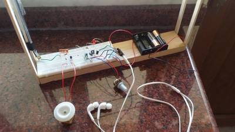

2016-10-06 - Nº 75

Editorial
Esta é a Newsletter Nº 75 que se apresenta com o mesmo formato que as anteriores. Se gostar da Newsletter partilhe-a!
Todas as Newsletters encontram-se indexadas no link.
Esta Newsletter tem os seguintes tópicos:
Hoje comemora-se o nascimento de George Westinghouse. Este inventor Norte Americano inventou o sistema de travões a ar comprimido. Foi também um pioneiro na industria eléctrica e um concorrente do Thomas Edison. Criou um sistema de distribuição de electricidade baseado em corrente alterna. Comemora-se igualmente o nascimento de Reginald Fessenden. Este inventor canadiano conduziu experiências com ondas de rádio incluindo o uso de ondas continuas. Continuou as suas invenções nas áreas da televisão e do sonar. Começou hoje a primeira edição do Pixels Camp nas instalações da LX Factory. Está a ser um evento bastante concorrido e que face à elevada adesão da comunidade ficará também na história como aconteceu com edições da sua variante original Codebits. Esta semana a nave espacial financiada pela milionário Jeff Bezos ficou fora de controlo e teve que ser destruída durante o recente teste de voo. A Rosetta concluiu a sua viagem de 12 anos aterrando no cometa 67P/Churyumov–Gerasimenko. Ainda esta semana a Google anunciou a disponibilidade em open source da sua tecnologia de mapeamento dentro de portas - Cartographer.
Na Newsletter desta semana apresentamos diversos projetos de maker assim como alguns modelos 3D que poderão ser úteis.
 João Alves ([email protected])
João Alves ([email protected])
O conteúdo da Newsletter encontra-se sob a licença  Creative Commons Attribution-NonCommercial-ShareAlike 4.0 International License.
Creative Commons Attribution-NonCommercial-ShareAlike 4.0 International License.
Novidades da Semana ^
Amazon Chief's Spaceship Misfires
"An unmanned spaceship funded by Internet billionaire Jeff Bezos veered out of control and had to be destroyed during a recent test flight, highlighting the dramatic risks of private space ventures. The spacecraft, developed by closely held Blue Origin LLC, was on a suborbital flight from the company's West Texas spaceport last week when it started to go off course and ground personnel lost normal contact with the vehicle. Investigators are looking at remnants of the craft recovered on the ground to determine the cause." [...]
Mission complete: Rosetta's journey ends in daring descent to comet
"ESAs historic Rosetta mission has concluded as planned, with the controlled impact onto the comet it had been investigating for more than two years. Confirmation of the end of the mission arrived at ESAs control centre in Darmstadt, Germany at 11:19 GMT (13:19 CEST) with the loss of Rosettas signal upon impact. Rosetta carried out its final manoeuvre last night at 20:50 GMT (22:50 CEST), setting it on a collision course with the comet from an altitude of about 19 km. Rosetta had targeted a region on the small lobe of Comet 67P/ChuryumovGerasimenko, close to a region of active pits in the Maat region." [...]
Introducing Cartographer
"We are happy to announce the open source release of Cartographer, a real-time simultaneous localization and mapping (SLAM) library in 2D and 3D with ROS support. SLAM algorithms combine data from various sensors (e.g. LIDAR, IMU and cameras) to simultaneously compute the position of the sensor and a map of the sensors surroundings." [...]
Outras Notícias
- NXP Unveils Airfast 3 RF Power Transistors to Advance Cellular Infrastructure for Smart Cities
- This Giant Autonomous Dump Truck Doesnt Have a Front or Back
- Boeing CEO Vows to Beat Musk to Mars
- Two Million Miles Closer to a Fully Autonomous Future
Ciência e Tecnologia ^
Quantum teleportation over 7 kilometres of cables smashes record
"A new world record for quantum teleportation has been set, bringing quantum communication networks that can stretch between cities a step closer. Two independent teams have transferred quantum information over several kilometres of fibre optic networks. Being able to establish teleportation over long distances is a crucial step towards exchanging quantum cryptographic keys needed for encoding data sent over the fibres. Quantum teleportation is a phenomenon in which the quantum states of one particle can be transferred to another, distant particle without anything physical traveling between them. It relies on a property called entanglement, in which measuring the state of one particle immediately affects the state of its entangled partner, regardless of the distance between them." [...]
Research at Pitt into materials that compute advances as engineers demonstrate system performs pattern recognition
"The potential to develop materials that compute has taken another leap at the University of Pittsburghs Swanson School of Engineering, where researchers for the first time have demonstrated that the material can be designed to recognize simple patterns. This responsive, hybrid material, powered by its own chemical reactions, could one day be integrated into clothing and used to monitor the human body, or developed as a skin for squishy robots." [...]
Thermal-Noise Imaging Captures Tiny Biological Tissues
"Imagine standing in a dark room in which a single, glowing ball is bouncing around. The ball avoids a region in the center of the room. Over time, you might conclude that an object sits in that region, even though you cannot see it. That thought experiment illustrates thermal-noise imaging, a technique that a team at a U.S. university has applied to nanoscale imaging of soft biological structures (Nat. Commun., doi: 10.1038/ncomms12729). The technique could lead to new means for studying live cells and other tiny biological structures." [...]
Secure passwords can be sent through your body, instead of air
"Sending a password or secret code over airborne radio waves like WiFi or Bluetooth means anyone can eavesdrop, making those transmissions vulnerable to hackers who can attempt to break the encrypted code. Now, University of Washington computer scientists and electrical engineers have devised a way to send secure passwords through the human body using benign, low-frequency transmissions generated by fingerprint sensors and touchpads on consumer devices." [...]
Modelos 3D ^
Com a disponibilidade de ferramentas que permitem dar azo a nossa imaginação na criação de peças 3D e espaços como o thingiverse para as publicar, esta rubrica apresenta alguns modelos selecionados que poderão ser úteis.
Customizable Pen
"This is a customizable pen, adjustable to accommodate common refills. Choose a length and pen diameter that are comfortable for you! The Lockheed Martin logo can be added to the cap." [...]
powerdrill guide
"an attachment to keep the drill square to the work-surface. kind of a portable/handheld drill-press :-) for those who either don't want to sacrifice or simply have the space for a proper drill press designed around a pair of drawer-slides, with modularity/extensability in mind" [...]
Chess - All OPENSCAD - All Random
"Its not called horse..." [...]
Spray Can Holder (With Reversed or No Mounts!)
"Neat design by Mostlighting, but I didn't like how the 2 sides weren't mirrored and how exposed the brackets were. Just an aesthetic thing. I made mirrors images of the original design so you can have the mounting holes down the center or outside edges. Additionally, I added ones with NO mounting brackets, so you don't have to have visible brackets / screws for every can (you shouldn't need that physical much support for a bunch of spray cans)" [...]
Projetos Maker ^
Diversos Projetos interessantes.
Smart Shoes Using Arduino Uno and 1Shield
"Here is an easy Smart Shoes project, that detects the obstacles in 3 directions so that your smartphone would call out for you "Move forward" , "Move right" or " Move left". This is a prototype for a whole Smart Shoes project to be." [...]
Step-down LED Driver (Up to 36V Input with Sleep Feature)
"This LED driver is very similar to the Simple Buck LED Driver but was modified to handle a higher input voltage. A benefit of a larger input voltage is that you can power more LEDs in series with each driver. This driver has PWM dimming and sleep feature which can prolong battery life when not in use." [...]

Arduino Morse Decoder
"This device reads hand keyed Morse code from a signal key (or an ordinary switch) and translates it to plain text and show the Morse code you're keying on an LCD. I use it to train my own Morse keying skills. The decoder automatically corrects itself for your keying speed." [...]
Homemade Electronic Drum kit with Arduino Mega2560
"This is my Arduino Project. How to build an e-drum kit with Arduino? Hello dear reader! -Why doing such a Project? First of all because if you like these kinds of things, you will enjoy the work process really much. Second, because its really cheap compared to real e-drum kits and you will be able to save a huge quantity of money. Anyway, lets move on to the main part of this article." [...]
Arduino Touch Screen Music Player and Alarm Clock Project
"In this project I will show you how you can make an Arduino Touch Screen MP3 Music Player and Alarm Clock. You can watch the following video or read the written tutorial below." [...]
variable bench top powersupply
"This instructables will show how I built a variable voltage power supply based off of the lm338 variable voltage regulator. The lm338 circuit is very simple and can be made with only the voltage regulator, a resistor and a potentiometer. the voltage regulator relies on the voltage given to its adjust pin, this voltage is adjusted using a resistor and a potentiometer to change the voltage given to the adjust pin. the capacitors are used for smoothing the input voltage and output. The lm338 can output a constant 1.2-30vdc at 5 amps (adjustable volts), input of 33 vdc or lower (input has to be a couple volts higher than output) and a peak current of 7 amps. the full datasheet of the lm338 can be seen here!" [...]
Arduino Wireless Animatronic Hand
"This is a very simple but at the same time a very hard project depending on your skill level. Lets get to building! What this is, is a wireless animatronic hand that doesn't need a computer to operate. The user wears a control glove and can control the animatronic hand precisely." [...]
DIY HID IR keyboard (FLIRC clone)
"A while ago I got to know about the FLIRC IR receiver which I thought of buying. But I thought, Hey! Why buy something I can make at home. So basically what FLIRC do is convert IR signals received from any remote to HID signals. From what I gathered, it recognizes as an HID keyboard to the computer. Now, to the project, we can do this using two ways." [...]
Sumobot and Arduino Introductory Robotic Kit
"This instructable is a description of the build process of the custom robotic kits designed for and used by University College Dublin ElecSoc. These kits are designed as an introduction to robotics and the arduino ide. The kits use easily accessible parts and is designed to accommodate modification and hacking. Some sample code is available here (https://github.com/Chris-j-hill/sumo_test) and is designed to work with a variety of different hardware setups, which is aimed to abstract away the low level operations required to control individual pieces hardware and simplify the process of getting the kits up and running. The aim of these kits is to remove the complexity of dealing with a lot of different motor drivers and sensors while providing a flexible platform for interacting with this hardware with relative ease." [...]
A Desk Drawer Protector Using ESP8266
"I am slightly (just a teeny bit, I assure you) obsessed with my desk drawer and the arrangement of the contents therein. When I am in dire need of my Kuru Toga pencil (sketch emergency) or my Alaskan knife (bear emergency), my hand knows where to find it - even in the murky darkness of an all-too-common Bengaluru power outage. Since my desk drawer remains the only place at home where sightings of scotch tape, a pair of scissors, or a pen that actually writes - is guaranteed, this sacred space is frequently violated. The marauders who purloin such precious artifacts vary in ages 3 to 74. Ive been threatening to do something about it for a while, and now the time has come to unleash the power of ESP8266 and IFTTT on this situation." [...]
Nuw: the resistor color code clock
"I wanted to make a clock. Clocks can be cool. However the internet is filled with projects about making clocks, so I wanted to make something special. And that is how Nuw originated. Nuw is an abbrevation of Nerds Ultimate Watch. It is ofcourse presumptuous to use such a name but hey I invented it so I can name it whatever I want. I had this stupid idea about making a clock that displays the time not as usual in figures but in resistor colour codes." [...]
Automatic volume tracking for a TV
"A couple of years ago I was given a non-working 50" Philips flat-panel TV. As is often the case with these things, there was actually very little wrong with it and in this instance it was a pair of bad capacitors in the power supply and it cost about $3 to fix. With the working TV, I now had another problem: The internal speakers sounded terrible! Rummaging around I found an old JVC 35 watt/channel audio amplifier/tuner from the 1980's and using the "audio output" on the back of the TV I connected it to the amplifier and that to a pair of high-efficiency JBL 12" 4-way speakers: It sounded pretty good - lots of volume, good highs and thundering bass with "only" 35 watts (I wouldn't need a subwoofer!) - but the volume control had no effect. Finding another cable, I then tried the headphone jack on the side of the TV, but its volume wasn't affected!" [...]
LED Umbrella
"This outlines a project that which incorporated a LED strip into a clear umbrella. The main components of the project were Adafruits NeoPixels and a Gemma Microcontroller. The program has 5 modes which is changed by a button interrupt and potentiometer which contols the speed of the lights. This project was sinspired by Adafruits tutorial projects: FLORAumbrella an Gemma powered Sound Reactive Drums." [...]
DIY AUTOMATIC SOLAR CHARGE CONTROLLER
"Today I am back with another project called DIY AUTOMATIC SOLAR CHARGE CONTROLLER. Its an automatic switching circuit that used to control the charging of a battery from solar panels or any other source. Its a 555 based simple circuits the charge the battery when the battery charge goes below the lower limits, and stop charging when the battery reaches it's upper limit voltage." [...]

Draw Sound With Arduino
"Drawing is fun, so is making music... So let's combine them so we can draw sounds! It's simple once you understand how it works. First we use a graphite pencil, the graphite is conductive but still is slightly restive. The Arduino board measures the resistance between the pencil and paper clip then converts it into a pitch that it then sends to the speaker. I added an potentiometer to further control the pitch, also it will not play unless there is contact from the pencil. You can make tons of different designs, just remember the thinner the line the more resistance there will be. I think it's time to begin!!" [...]
Lighten Your Step: LED Dance Shoes!
"So you've seen shoes with LED lights. But have you seen ones that change color? Maybe. How about ones that are fully programmable, packed with a micro sized Arduino Gemma, a rechargeable lithium battery, and on top of that, they have pressure sensors in the soles of the shoes. This instructable will show you how I turned a pair of canvas sneakers into dancing shoes!" [...]
The Arduino Synthesizer
"The Arduino is able to output sound through a library that has been developed called the Tone Library. By creating an interface and a program that can call certain values to be output to an audio out, the Arduino Synthesizer is a robust tool for making a rudimentary noise machine. It uses granular synthesis techniques to generate a distinctive sound that can be a whole lot of fun for musicians, artists, tinkerers, and hobbyists." [...]
Project dEEP
"This is a continuous bi-copter project aimed at making low cost & repairable UAVs. The reason this is concise is that there's already lots of info on other sources & I don't want to drag away from the main focus." [...]
Build Your Own Metal Detector with an Arduino
"Learn how to build a metal detector using a Colpitts oscillator and an Arduino. In the above circuit, the series capacitor and inductor form a tank circuit. In an ideal tank circuit, the electrical energy dissipated from the capacitor will charge the inductor, storing the energy as a magnetic field. After the capacitor discharges, the magnetic field built up by the inductor begins to collapse, creating a current flow in the opposite direction from which it was charged with. This, in turn, charges the capacitor once again. When the magnetic field has collapsed, this cycle repeats. The continuous energy build-up between the capacitor and inductor creates an oscillating current between the two components." [...]
IoT Water Control and Monitor using NodeMCU & Cayenne
"I'll try to create IoT water control and can be monitoring using Cayenne. The valve will close when water reached top level of the sensor. This project is to ensure that water reservoir always in full condition, because in my location the water supply only flow when midnight, but if midnight we are not need water." [...]
RC2014/LL and RC2016/10
"The RetroChallenge is upon us again! This time around, I plan on working on my Z80 homebuilt computer, the RC2014. (Website for RC2014, Order a RC2014) For a few months now, I've had my RC-2014 computer built, and modified to be an RC2014/LL computer. What this means is, is that I have some modified modules using no additional external hardware. The above picture shows my RC2014/LL system with its extra RAM module, and the C0 Serial expansion board to the left, with the SD card interface board (SSDD1) on it." [...]
Turn me on, an ATtiny RGB mood lamp
"In this Instructable I will show you how to make a mood lamp that you can turn on by flipping it around, how cool is that!? This project is an exelent beginner project for people that want to get familiar with the ATtiny chip." [...]
ESP8266 Led Strip MQTT Control Lights WS2812
"I always wanted under bed led lights so that I can control the mood or even on the family room underneath the tv to get very subtle lighting. I could write rules in OpenHAB and it takes care of the rest. There is a rather simple setup to get everything accomplished over MQTT thanks to the power of Homie Framework with only a few lines of code. Things to consider before getting started. Depending on the size of your LED Strip of WS2812s, you will need to adjust. Each LED light consumes about 60 mA, so if you are powering 60, the minimum Amperage would be as follows. As you add more lights, the power requirements also increase." [...]

Simple FM radio (sure works!)
"Simple and powerful fm radio with easy to find parts. This is a regenerative Fm radio. Build very simple and easy to find parts. No special coils or uhf transistors. Antenna catches fm waves, first transistor works as oscillator. R1, L1 and C1 determinates oscillation frequency. Internal freq and cathed freq overlaps and gets more power. Germanium diode detects audio freq. T2 and T3 works as audio ampflifier. Last condansator connected to jack is 10uf electrolytic con." [...]
Easy RGB LED Sign
"LED signs and displays are fairly common place, from advertising products or services to keeping people entertained they can be a very useful tool. Having recently written a Flowcode component library around some of the new intelligent RGB LEDs I felt I needed to make something to test out the new functionality. To my surprise the display came together so quickly I thought I would share it with you all." [...]
Easy Air Quality Report With NodeMCU+MQ135+Cayenne
"This simple project is to monitoring the air quality with NodeMCU and MQ135 sensor. The ppm value displayed to Cayenne. With Cayenne we can add some trigger without code. This simple project is very easy to beginner (even I'm beginner too) and have real time air quality monitor over internet." [...]
Arduino Transistor Motor Driver
"Now here is the a H-Bridge motor driver that is made of transistors and can be controlled by an arduino,it is capable of changing the direction of the motor but not the speed....." [...]
Arduino line follower with PID and 90 degree turns
"This is my line follower with PID and arduino. It does 90 degree turns." [...]
HOMEMADE CLAW MACHINE
"This is the second and new Version of my Claw Machine (Old Version) As I announced in my first Version, the "new" Machine will be painted and setted up with an Arduino." [...]
How to Make a Dehumidifier (Thermoelectric Cooling)
"If you live in a humid area, or want to decrease the level moisture inside your house to prevent the growth of mold. This is the perfect Instructable for you, because I'm going to show you have to build a very easy to build dehumidifier from inexpensive parts you can find on Ebay. It will quickly remove moisture from the air by a phenomenon called condensation." [...]
Solar Water Heater from scratch
"Five years ago when I moved to Sonora (the most sunny state in Mexico) I decided to build a solar water heater (SWH) and save money and CO2 on fossil energy. It took me 6 months to figure out which system to choose according to the local climate, to size the collector and the tank and to design the 3D taking into account the material available locally. I built it on my free time and 2 months later I had it installed and producing year-round crazy-hot water for the whole family! Since then it never stopped heating water without problem, saving tons of $$ and CO2! At that time I documented almost every step in the conception and construction process. I'm writing this Instructable so anyone can built one on his own, adding some enhancements based on experience of those 5 years of use." [...]
Backup e gravao de Memory Card PS1 (Arduino & Python)
"Gostaria de comear o post falando das muitas horas de diverso na minha infncia proporcionadas pelo meu Playstation, mas no, nunca tive um. Se no me engano, o nico jogo do PS1 que joguei foi Digimon Rumble Arena. Apesar disso, pelo meu interesse por video games e hardware, sei uma coisa ou outra sobre ele. Nintendo e Sony se juntaram pra criar um aparelho que permitisse ao SNES o uso de CDs. A Nintendo cancelou(M escolha) o projeto com a Sony, que decidiu criar seu prprio console. A Nintendo depois de um tempo se juntaria(E cancelaria tambm) Philips com o mesmo propsito. O que resultou no CD-i, e em prolas como essa." [...]
TetrOS
"TetrOS is a small feature rich Tetris clone which is written in Assembly. It fits completely into a 512 byte boot sector as it requires only 446 bytes (which is the maximum allowed size of the first stage boot loader in the master boot record (MBR) of a drive) and is executed during the boot sequence before any operating system is loaded. Actually, it does not need any existing operating system. TetrOS is an operating system, hence the suffix OS in its name." [...]
That's all Folks!